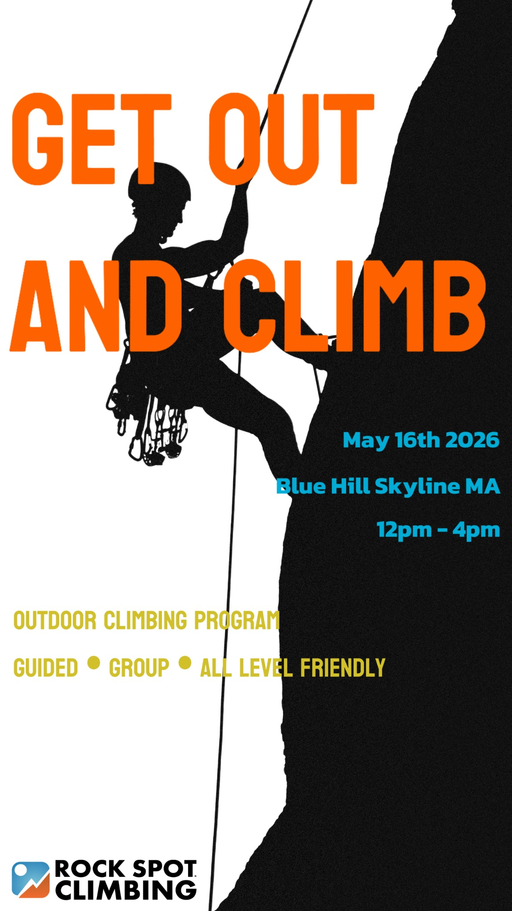

Event Poster
Get Out and Climb
A promotional poster created for a Rock Spot Climbing outdoor program. The design uses a high-contrast climbing silhouette, oversized orange typography, and strong vertical composition to make the event feel active, direct, and easy to notice from a distance.